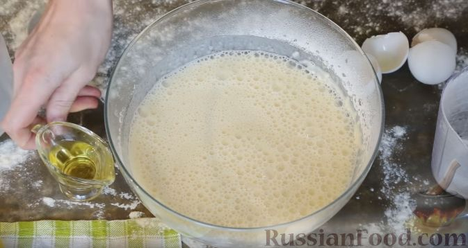
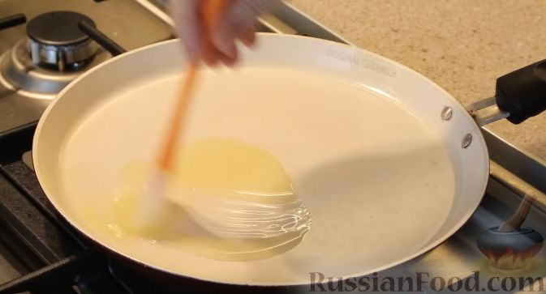
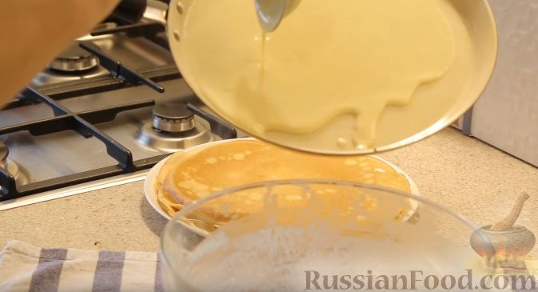
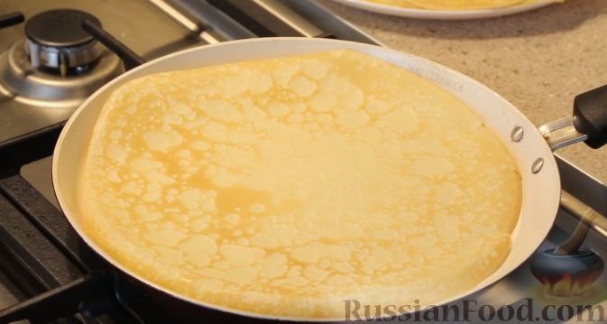
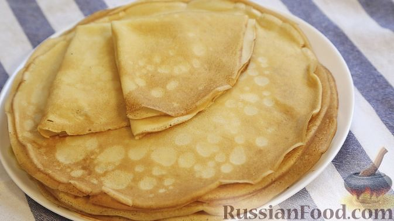

Рецепт блинов
Перейти к концу страницы
Список продуктов
- Молоко
- Яйца
- Масло растительное
- Мука
- Сахар
- Соль
- Масло сливочное
Необходимое количество продуктов
| Молоко |
500 мл |
| Яйца |
2 шт |
| Масло растительное |
1 ст. ложка |
| Мука |
200 г |
| Сахар |
1 ст. ложка |
| Соль |
1 щепотка |
| Масло сливочное |
50 г |
Этапы приготовления
- Размешайте яйца с солью и сахаром (венчиком или миксером).
Влейте молоко (желательно слегка тёплое, или комнатной температуры).
Понемногу добавляя просеянную муку, перемешайте блинное тесто венчиком,
чтобы добиться однородной консистенции без комочков.

- Тесто для блинов должно быть достаточно жидким, чтобы блинчики получались
тонкими. Влейте в тесто растительное масло. Перемешайте. Оставьте блинное
тесто на 15-20 минут.

- Хорошо разогрейте сковороду и слегка смажьте её маслом.

- Налейте в центр сковороды небольшую порцию теста. Сразу же вращайте сковородку
по кругу, чтобы тесто равномерно распределилось по всей

- Жарьте тонкие блины на среднем огне (или чуть выше среднего) до румяности с
двух сторон. Переворачивайте блинчик аккуратно, поддевая лопаткой с края.
Готовые блины выкладывайте на тарелку и сразу смазывайте сливочным маслом,
чтобы края не были сухими и блинчики получились нежными.

- Подавайте блинчики с вареньем, джемом или сгущенкой.
Приятного аппетита!

Заключение
Теперь вы знаете, как приготовить вкусные блины. Пробуйте разные начинки и наслаждайтесь!
Вернуться в начало страницы
Перейти на Google